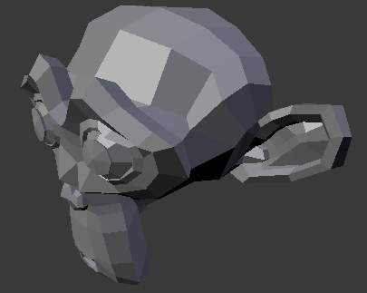
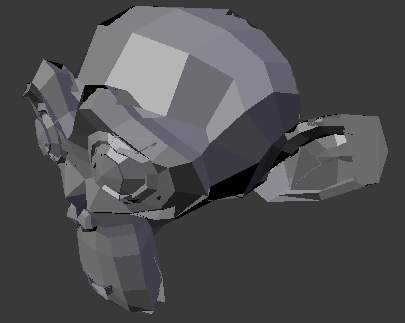
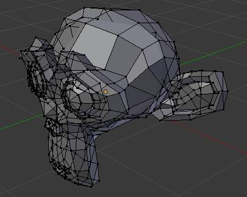

3D视图¶
Drawing¶
Depth Buffer Glitches¶
Sometimes when setting a large clipping range will allow you to see both near and far objects, but reduces the depth precision resulting in artifacts.

Model with no clipping artifacts. |

Model with clipping artifacts. |

Mesh with artifacts in 编辑模式. |
{kind=link}
{kind=link}
{kind=link}
To avoid this:
- Increase the near clipping when working on large scenes.
- Decrease the far clipping when objects are not viewed at a distance.
When perspective is disabled only the far Clip-End is used, very high values can still give artifacts.
This is not specific to Blender, all OpenGL/ DirectX graphics applications have these same limitations.
Objects Invisible in 相机 View¶
If you have a large scene, viewing it through 相机 View may not display all of the Objects in the scene. One possibility may be that the clipping distance of the camera is too low. The camera will only show objects that fall within the clipping range.
Performance¶
Slow Drawing¶
There are a couple of reasons why you may be experiencing a slow viewport.
- Old Hardware
- Sometimes your hardware, mainly your graphics card, may be too slow to keep up with your model.
- Upgrade Graphics Driver
- In some cases, slow selection is resolved by using updated drivers.
Slow Selection¶
Blender uses OpenGL drawing for selection, some graphics card drivers are slow at performing this operation.
This becomes especially problematic on dense geometry.
Possible Solutions:
- OpenGL Occlusion Queries (User Preference)
See
This option defaults Automatic, try setting this to OpenGL Occlusion Queries, since there is a significant performance difference under some configurations.
- Upgrade Graphics Driver
- In some cases, slow selection is resolved by using updated drivers. It is generally good to use recent drivers when using 3D software.
- Select Centers (Workaround)
- In 物体模式, holding
Ctrlwhile selecting uses the object center point. While this can be useful on its own, its has the side-effect of not relying on OpenGL selection. - Change Draw Modes (Workaround)
- Using Wireframe or even Bounding Box draw modes can be used to more quickly select different objects.
Note
Obviously, the workarounds listed here are not long term solutions, but it is handy to know if you are stuck using a system with poor OpenGL support.
Ultimately, if none of these options work out it may be worth upgrading your hardware.
Tools¶
Invalid Selection¶
There are times when selection fails under some configurations, often this is noticeable in mesh 编辑模式, selecting vertices/edges/faces where random elements are selected.
Internally Blender uses OpenGL for selection, so the graphics card driver relies on giving correct results.
Possible Solutions:
- Disable Anti-Aliasing FSAA, Multi-Sampling
This is by far the most common cause of selection issues.
There are known problems with some graphics cards when using FSAA/multi-sampling.
You can disable this option by:
- Turning FSAA/multi-sampling off in your graphics card driver options.
- Turning Multi-Sampling off in the system preferences.
- Change Anti-Aliasing Sample 设置
Depending on your OpenGL configuration, some specific sample settings may work while others fail.
Unfortunately finding working configuration involves trial & error testing.
- Upgrade Graphics Driver
As with any OpenGL related issues, using recent drivers can resolve problems.
However, it should be noted that this is a fairly common problem and remains unresolved with many drivers.